Yarda · Consumer subscription · Brand, UX, UI
Building a better digital experience, from brand to product
Yarda is an Australian lawn care start up that builds a personalised nutrient plan from your address, lawn size, weather, soil and grass type. I led the redesign of Yarda's digital experience, shaping its visual identity, website and survey journey into a cohesive experience that connects the brand with the product.

A long, complex survey caused drop off. There was no dashboard, and the brand did not explain what made Yarda different.
Set a roadmap, studied competitors, designed flows and wireframes with the client, refreshed the brand and built the UI with developers.
A four step funnel with streamlined questions, a clear product page and a dashboard, inside a warmer, more cohesive identity.
Too much asked, too little shown
The experience lacked personalisation and ease. A multi step survey was complex and overwhelming, so many people dropped off. There was no dashboard to track progress or find resources, and the brand and site did not explain what made Yarda special.
Many questions, no sense of progress, and no reward for finishing.
With no dashboard, there was no place to track a lawn or find help after buying.
The site did not explain what made a tailored plan different from a bottle off the shelf.
Creating a distinctive brand identity
I established a visual direction that gave Yarda a recognisable personality across its digital touchpoints. The identity brought together colour, typography, imagery and visual elements to create a consistent foundation for the website and product experience.
The palette
Green for growth, deep teal for trust, coral for the one thing to do next.
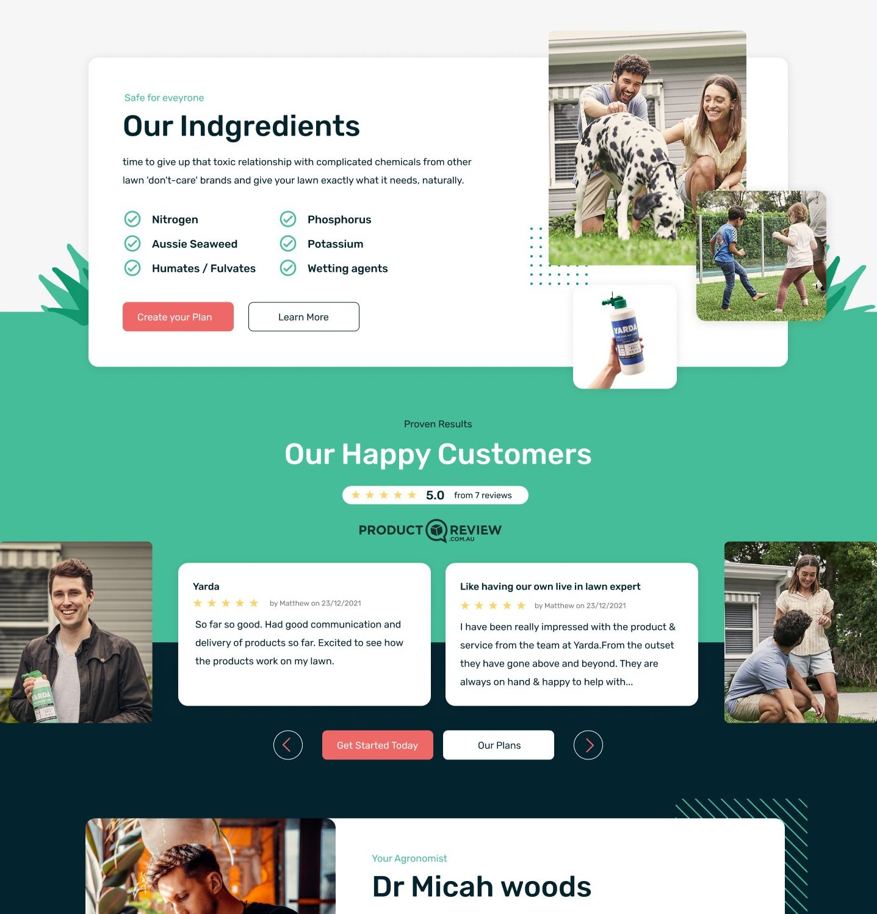
Ingredients pageNutrients explained as friendly tiles, so the science never feels like a warning label.
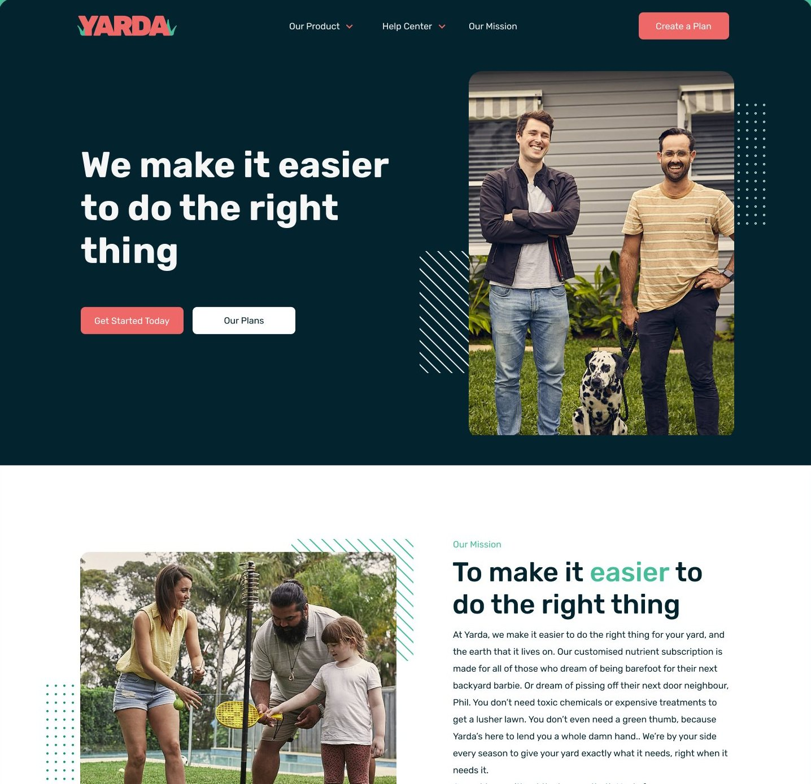
Our missionThe brand story told with real people, warm photography and the same calm layout.
Bringing the brand to life through the website
With the visual identity established, I translated the brand into a digital experience that communicated Yarda's offering, guided visitors through the content and created a consistent path towards the survey.
From competing messages to one clear action
Before and after. Drag to move from the old homepage to the redesign. Same story, told with more clarity, one clear action and a brand that feels like a lawn.
A single address field and a Start button replace a banner with competing messages. The plan begins the moment someone types.
Free delivery, easy cancel or pause and a money back guarantee sit in one green band, answering the doubts before they are asked.
A bold headline, plain body copy and generous space let the product photography do the talking.
Designed for the garden, not just the desk
Most people check a lawn plan outside, on a phone. The homepage, questionnaire and dashboard were designed in parallel for mobile, with the same hierarchy, large touch targets and cards that stack cleanly.
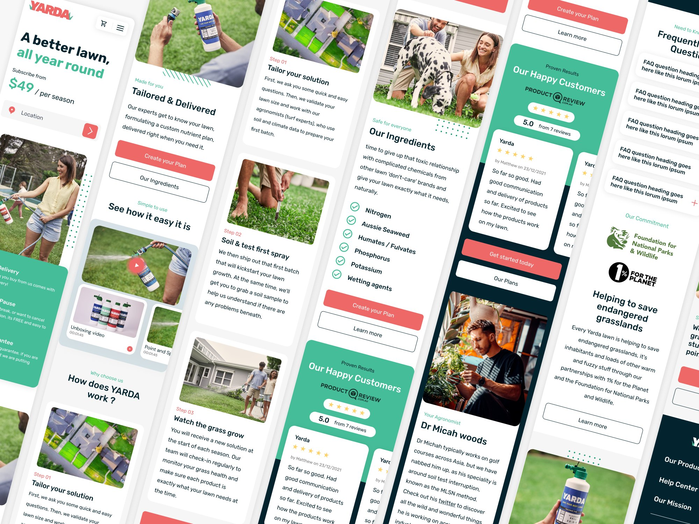
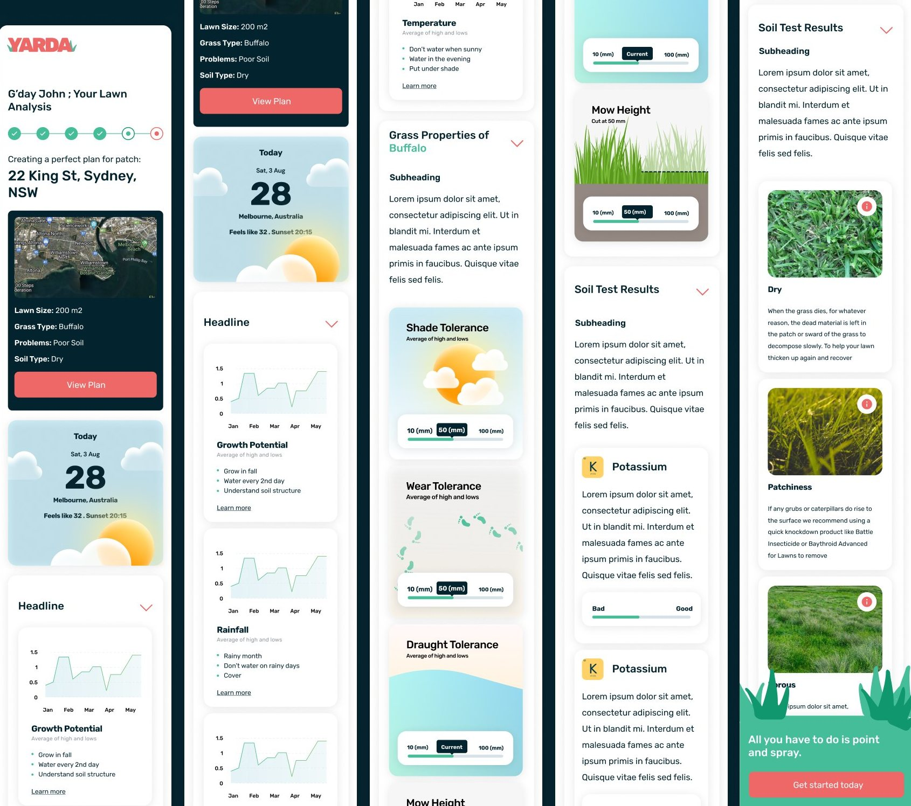
Turning a lengthy survey into a guided experience
I redesigned the survey journey to make a multi step experience feel more manageable, with clearer progression, more considered interactions and a structured path from the first question to the final result.
Aligning on the plan before the screens
I began with a project roadmap so the client could see the process and what we were aiming for. Then I audited the live site and competitors, used user feedback and industry best practice to find the pain points, and turned them into opportunities.
What the UX audit covered
A written review of the existing site, shared at kick off so everyone started from the same facts.
The redesigned funnel
Four steps, each doing one job.
People enter their address and the plan starts to feel personal.
A simpler, more intuitive series about their lawn.
Customised nutrient subscription plans, presented clearly.
One hub to manage the subscription and track progress.
Choosing the path with the client
Research became user flows, and flows became wireframes showing the logical sequence of screens and interactions. I worked with the client to select the flow and wireframes that best fitted the business.
The flow
Before refining the individual screens, I mapped the survey journey to understand how users would move between questions, decisions and results. The dot walks the happy path from the homepage to the lawn analysis.
Two decisions shape the journey. The address check sends a wrong address back to be edited and saved before continuing, and the email check asks again, politely, if the address is not valid.
Scroll sideways to see the full flow. Simplified for client privacy. Green boxes are screens, slanted boxes are inputs, diamonds are decisions.
One question at a time
The survey became a short guided conversation. A progress rail shows where people are and what is left, each screen asks one thing, and the reward, a personal lawn analysis, arrives at the end.
Fill in the questionnaire
A working version of the funnel, rebuilt from the Figma designs. Fill it in and continue through to the lawn analysis.
{{ qAddr }}
Is this your patch?
Turns out Australia is pretty big, so we’ll tailor your lawn’s nutrients to your local soil and climate.
Is this address correct?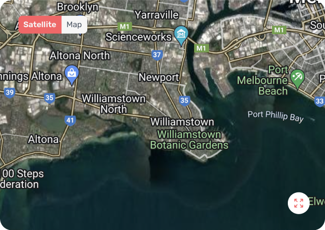
By entering your details you agree to our Terms of Use and consent to our Privacy Policy
What’s your name?
Reckon we should get introduced before we get all up in your grass.
By entering your details you agree to our Terms of Use and consent to our Privacy Policy
How big is your lawn?
Give us your best guess and if you’ve got no idea, the Yarologists will grab your address and do a quick aerial photo check. Too easy!
{{ szMsg }}By entering your details you agree to our Terms of Use and consent to our Privacy Policy
What type of grass are we working with?
If you’re just realising there are different types of grass, take a breather. Our Yarologists will check later on.
By entering your details you agree to our Terms of Use and consent to our Privacy Policy
Any issues we should know about?
With your lawn, that is. We can’t help with your neighbour’s encroaching tree, but we can sort your lawn out.
Select all that applyBy entering your details you agree to our Terms of Use and consent to our Privacy Policy
G’day {{ dName }}
- Lawn size: {{ dSize }}
- Grass type: {{ dGrass }}
- Problems: {{ dProb }}
- Regional soil type: Dry
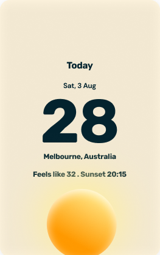
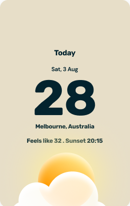
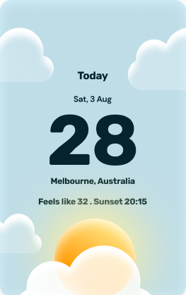
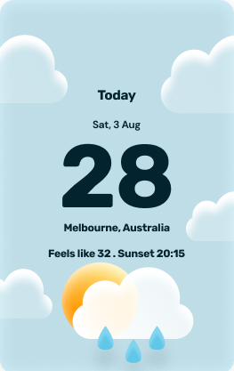
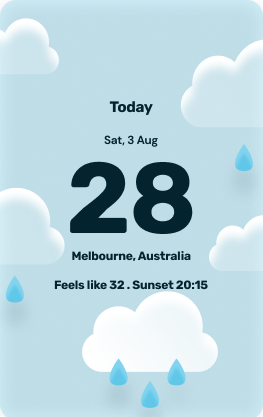
Growth picks up as it warms. Feed early in the season to get ahead of it.
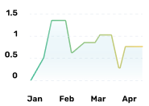
RainfallAverage rainfall by monthWater deeply and less often, so roots reach down instead of staying shallow.
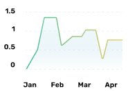
TemperatureAverage of highs and lows by monthIn the hottest months, mow a little higher to shade the soil and protect the roots.
Shade tolerance
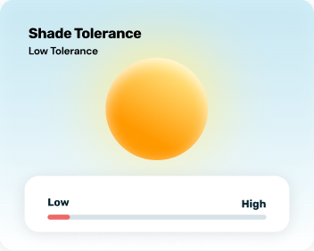
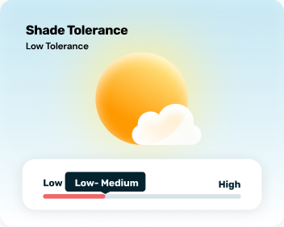
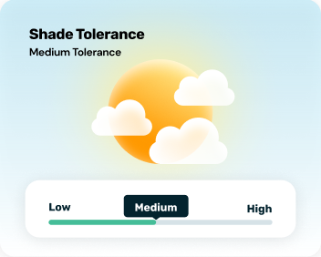
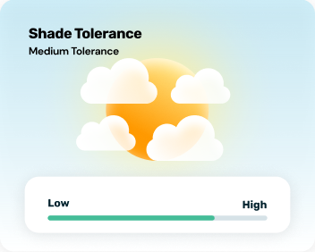
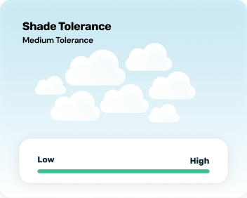
Wear tolerance
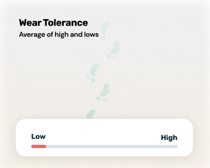
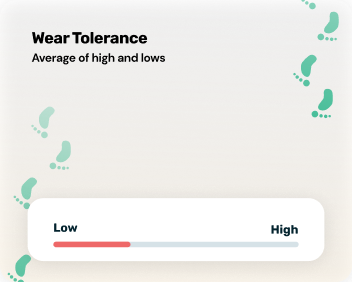
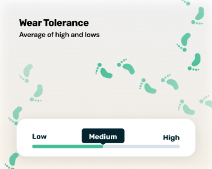
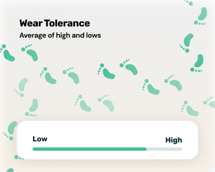
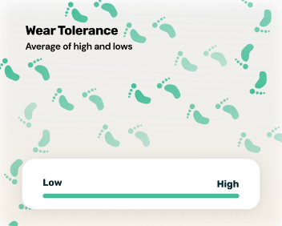
Drought tolerance
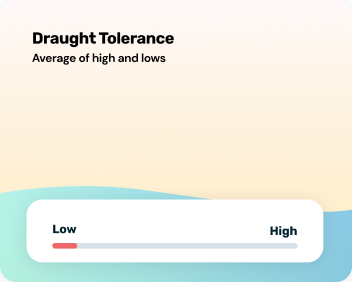
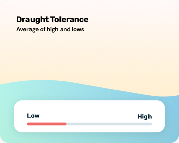
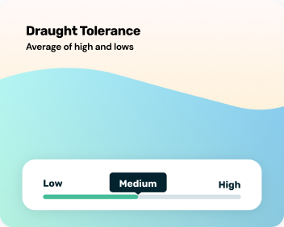
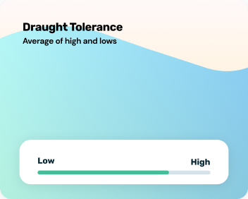
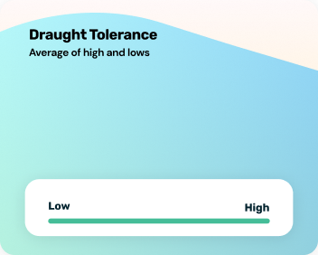
Mow height
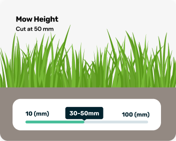
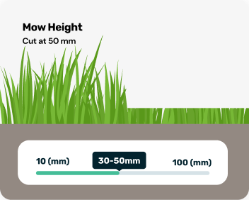
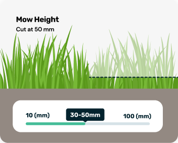
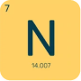
Drives leaf growth and the deep green colour of a healthy lawn.
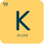
Helps grass handle heat, drought, wear and disease.
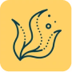
A natural tonic that helps a lawn recover from stress.
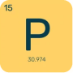
Supports strong roots and quick establishment.
{{ isd0 }}
{{ isd1 }}
{{ isd2 }}
No issues selected. Your lawn is off to a good start.
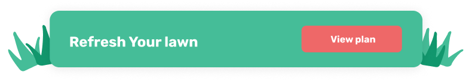
{{ spCap }}
{{ spBody }}
A hub people come back to
The dashboard was new. It turns a one off purchase into an ongoing relationship: a place to see the lawn, understand what it needs and manage the subscription.
Inside the dashboard
Two views, both scrollable. Switch to see the thinking behind each.
{{ dLede }}
{{ dB0 }}
{{ dB1 }}
{{ dB2 }}
Try the soil test
A small piece of the dashboard, live. Set each nutrient and watch the plan respond.
{{ soilMsg }}
A tight plan, kept in step with the build
I worked closely with the development team to understand constraints, solve feasibility questions and update the UI and Figma files on request. Three homepage modules were designed, reviewed and signed off in the opening days, then built in stages, with a design review after every build.
The plan
Four weeks, three lanes. Hover a card to lift it.
One coherent experience, from first impression to final result
The redesign brought together Yarda's brand identity, website and product experience into a more consistent digital ecosystem. From discovering the offering to completing the survey and exploring the results, each touchpoint was designed to feel connected and purposeful.
A recognisable visual identity carried across digital touchpoints.
A consistent experience connecting the brand, content and product.
A structured survey and results experience designed around the user.
Malak Usama
Product design for lending and regulated fintech